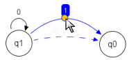

Hand-Tool
Select objects like states and transitions by clicking them.
Click and drag the mouse on some white area to pan / scroll.
Doubleclick on objects opens a property window.
Press 'Delete' to remove any object.

Hit the label of a transition. Click and drag the small circle to
pull the line of the transition.